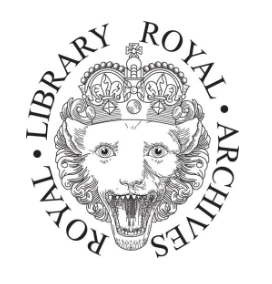
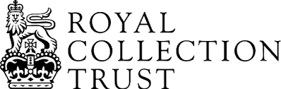
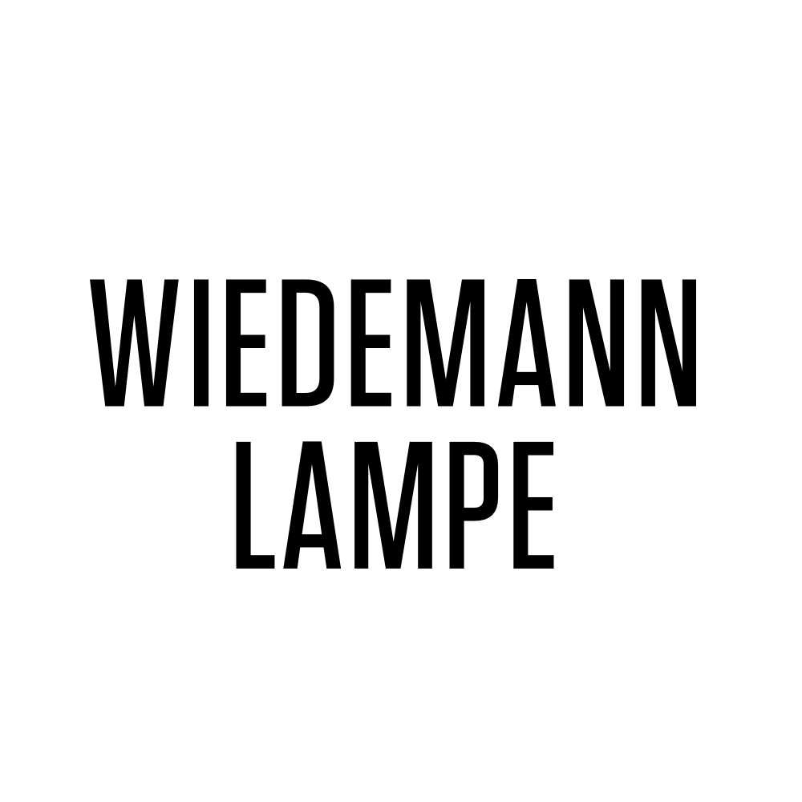

Lead Product Designer & Consultant
Turning ambiguous problems into shipped products.
I help organisations translate complex information and research into useful experiences across product strategy, UX, interaction and delivery. Experienced in data-rich products, visualisation, design systems, accessiblity and sustainability.
Selected Work
Designing products, platforms and systems for complex environments.
About
Designer, strategist, and maker.
50+
Products, Platforms, Systems delivered
15+
years of experience
8x
Publications and Awards
I'm a product designer with a focus on data visualisation,
digital accessibility, and the kind of complexity that resists
simple solutions. I work independently and collaboratively —
with research institutions, cultural organisations, and teams
building tools that need to work for real people under real
constraints.
My career started in knitwear. I studied Textile Design at the
Royal College of Art, which taught me to think about making
things with care, constraint, and a strong point of view. An
economic downturn pushed me to pivot into digital design, where
I taught myself to code and found that the instincts transferred
well. Since then I've worked across fashion, journalism,
marketing, and academic research, designing for mass audiences
and niche specialists, under commercial pressure and on long
research horizons.
Most of my projects involve researchers, engineers, historians,
and policymakers working on things that matter. That's sharpened
how I communicate design decisions, build shared ownership
across disciplines, and stay invested in what happens after
something ships.
50+
Products, Platforms, Systems delivered
15+
years of experience
8x
Publications and Awards
I'm a product designer with a focus on data visualisation, digital accessibility, and the kind of complexity that resists simple solutions. I work independently and collaboratively — with research institutions, cultural organisations, and teams building tools that need to work for real people under real constraints.
My career started in knitwear. I studied Textile Design at the Royal College of Art, which taught me to think about making things with care, constraint, and a strong point of view. An economic downturn pushed me to pivot into digital design, where I taught myself to code and found that the instincts transferred well. Since then I've worked across fashion, journalism, marketing, and academic research, designing for mass audiences and niche specialists, under commercial pressure and on long research horizons.
Most of my projects involve researchers, engineers, historians, and policymakers working on things that matter. That's sharpened how I communicate design decisions, build shared ownership across disciplines, and stay invested in what happens after something ships.
Approach
How I work.
-
Question the brief
Briefs describe what someone thinks they need. My role is to figure out what they actually need, and for whom. That questioning is part of the design, not a delay to it.
-
Think past the delivery
I care about what happens after something ships. Sustainability and longevity are part of what good design means to me, not constraints to work around.
-
Make complexity legible
I measure success by whether something that was opaque now feels obvious. If it needs someone to explain, it isn't finished.
-
Build accessibility in early
Designing for the full range of people who might use something almost always makes the work better. Usually it's what reveals where the thinking wasn't rigorous enough yet.
-
Leave the team stronger
Good collaboration isn't about process. It's about building enough trust that people share what they actually think, and making sure non-designers feel like the work is theirs too.
Collaborations
Some organisations I've worked with.
-

-

-

Skills
Domains
- Data visualisation
- Digital accessibility
- Research systems
- AI-integrated UX
- Archives & sustainability
- Design systems
Methods
- End-to-end product design
- User research & usability testing
- Information architecture
- Cross-functional collaboration
- Accessibility (WCAG)
- DesignOps
- Service design
- Agile
Tools
- Figma
- Adobe CC
- D3.js
- Observable
- RawGraphs
- Flourish
- HTML / SCSS / JS
- Jekyll
- GitHub
- Miro
Contributions
Publications
- Living with Machines: Computational Histories of the Age of Industry
- Small Data and Process in Data Visualisation
- The Place of Models and Modelling in Digital Humanities
- On Making in the Digital Humanities
- Humans in the Loop: Epistemology & Method in King's Digital Lab
- Visual Research Methods in Fashion
- Textile View magazine
- International Textiles Magazine
Recognition
- Information is Beautiful Awards — Longlist × 6
- RSECon2025 — Poster Award
- RSECon2022 — Poster Award
- Knit Happens: A Celebration of the Art of Knitting
- John Dunsmore Travel Scholarship
- Entomological Knits
- Off The Wall Exhibition
Conference & Community
- Reimagining Digital Accessibility: From Compliance to Collective Responsibility
- Intelligent Systems for Screen Archives
- Building Robust Practices for Research Outputs
- Research Excellence Framework 2021 Impact Data Analysis
- Data and Process in Data Visualization: The Radical Translations Case Study